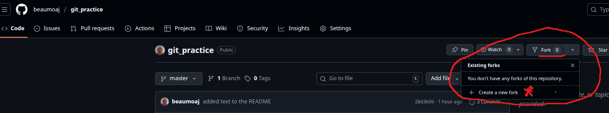

We are going to use GIT to keep track of versions of our work and submit completed exercises as a Pull Request.
What you should already know
You should have done the prep in the Onboarding module, Sprint 1
What you'll learn
- fork a repository
- clone a repository
- basic git commands such as
git add,git commit,git push
What you'll need
You need a laptop with git installed (Download Git). You will also need VS Code installed (Download VS Code).
What you'll do
You will fork and clone a git repository. Then do some work to complete an exercise. Finally you will submit your work in a Pull Request.
The GitHub Docs says the following about repositories:
This is the repository we are going to use today: https://github.com/beaumoaj/git_practice. When you follow the link, this is what you will see.

To work on a repository you need to create a copy of the whole repository down to your local computer This is referred to as creating a clone of the repository. However this repository does not belong to you and so if you clone it you will not be able to save your changes back to the repository. To allow your changes to be saved, you must first fork the repository to your own GitGub account.
To complete your CYF work, you will usually be starting from a CYF repository. The usual process will be to:
forkthe original repository so you have a copy of it in your own GitHub account.cloneyour copy of the repository back to your computer. Once the files are on your computer, you can edit them.- Do some work in which you make changes to the files in the copy on your computer.
- Inform
gitwhich files you have changed using thegit addcommand. - Save a local snapshot of your updated files by using the
git commitcommand. - Upload your changes to the copy of the repository in your GitHub account using the
git pushcommand. - Repeat steps 3 to 6 until you have finished met the success criteria for the work.
- Submit your work by submitting a pull request. A pull request will notify the owner of the original repository (which you forked) that you are sending them some changes to look at. CYF uses pull requests to keep track of work submitted by trainees. Volunteers will look at your pull requests and either approve (ie. you completed it correctly) or reject them (ie. you didn't meet the success criteria).
Now we will step through the process and see who it works.
Open the repository https://github.com/beaumoaj/git_practice in your web browser.
Click on the Fork button and choose Create new fork as shown on the right hand side of this image: 
You will be shown the following form:
- You should ensure that the Owner field is set to your username.
- You can keep the suggested Repository name which will be used as the name of the repository in your github account.
- The Description field may already contain some suitable text, but if not you could write your own or edit the original. For example, you could write:
This repository is part of Onboarding sprint 1
- Finally, click the Create fork button.
When Github has finished making a copy of the repository, you will be shown the new copy in your account. You can tell the difference between the two repositories by checking the URL in the address bar of your browser. For example, if the URL https://github.com/CodeYourFuture/js-exercises (reading from right to left) tells me that this is a repository called js-exercises owned by a user called CodeYourFuture on github.com. If I fork it to my account, the new copy will have the URL https://github.com/beaumoaj/js-exercises. The difference is that the owner is now beaumoaj, which is my github user name. When you fork a repository, you should always check that you are working with your copy.
First, you need to have a directory (another name for folder) into which you can copy the repository. To keep track of all of your work for ITP, create a new directory called (for example) CYF-ITP. Inside that directory, create new sub-directory for each sprint. Your sub-directory could be called (for example) Onboarding-Sprint1.
Now open the new folder in a terminal window. In a Linux computer press the Ctrl and ALT keys together (I will write this as CTRL-ALT) and then press the t key and a new terminal will open in your home folder. Now you need to change into your new directory using the cd command (you can remember cd as standing for Change Directory).
cd ~/CYF-ITP/Onboarding-Sprint1
Here is an example from my computer:
Notice that the prompt to the left of the cursor will tell you which is the current directory.
You can use the ls command to LiSt the files in the current directory. If you do that in your new directory you won't see any files. It should look like this:
Now lets clone the repository.
If it is not already open, open your copy of the repository on GitHub in your web browser. Make sure you are starting from your copy of the repository (look for your username in the URL in your web browser). Click the green Code button and you will see the Clone options.

You need to select either HTTPS, or SSH, or GitHub CLI and the copy the URL from the box.
We will use the HTTPS option. Select the HTTPS tab and copy the URL from the box. Now go to you terminal window and use the git clone command to clone the repository. The command is a version of the command shown below but the text YOUR_USERNAME should be replaced with whatever your username is on GitHub (you can anyway paste the URL after copying it from you repository)
git clone https://github.com/YOUR_USERNAME/git_practice.git
When you enter your version of the above command, you will get some messages printed to your terminal as the repository is copied down to your computer. If you use the ls command again, you should now see a new folder with the same name as the repository. On my computer it looks like this. The new folder is called git_practice: 
Now open your new git project in VS Code. The quickest way to do that is via the same terminal window you used above and type the following two commands:
cd git_practice code .
VS code should open displaying the new repository. It looks like this on my computer:

We will now work in VS code. If you opened the repository directory in VS Code, expand the Starter directory and open the index.html file from that directory. It looks like this in my computer: .
From the VS Code menu bar, select Terminal and then New Terminal and a new terminal window will appear inside VS Code below the HTML file. This terminal is just like the other terminal window you used in the previous step. You can type ls in the terminal window and you should see the same list of files and directories as you see in the Explorer panel. Here it is in my computer:
We will use this terminal window to run Git commands as we work.
The git status command
Before we do anything we will look at the git status command. In your terminal window type:
git status
You should see a response something like this:
[beaumoaj ~/CYF-ITP/Onboarding-Sprint1/git_practice]$ git status On branch master Your branch is up-to-date with 'origin/master'. nothing to commit, working tree clean [beaumoaj ~/CYF-ITP/Onboarding-Sprint1/git_practice]$
This is telling us we are working on a branch called master. This is a the master copy of the project. It also tells us "nothing to commit, working tree clean". This means we haven't yet made any changes.
Now we will make a change and see the effect.
In your index.html look for the following line:
<h1>Jane Doe</h1>
Edit the file to change the name from Jane Doe to your own name. When you have done that, rerun the git status command in the console window. You should see somethin glike the following text:
[beaumoaj ~/CYF-ITP/Onboarding-Sprint1/git_practice]$ git status
On branch master
Your branch is up-to-date with 'origin/master'.
Changes not staged for commit:
(use "git add <file>..." to update what will be committed)
(use "git restore <file>..." to discard changes in working directory)
modified: Starter/index.html
no changes added to commit (use "git add" and/or "git commit -a")
[beaumoaj ~/CYF-ITP/Onboarding-Sprint1/git_practice]$
This tells us that there are changes to the files. Specifically, that we have modified Starter/index.html. It also tells us that no changes have been added to commit. It suggests we use git add to do that.
The git add command
We have made a change to the file called Starter/index.html (this is the path to the file, Starter is the directory name and index.html is the name of the file that changed).
We need to stage the change (meaning we are informing git of the changes). In your terminal window type:
git add Starter/index.html
You should not see any output after running that command. Now re-run the git status command. Here are the two commands in my terminal.
[beaumoaj ~/CYF-ITP/Onboarding-Sprint1/git_practice]$ git add Starter/index.html
[beaumoaj ~/CYF-ITP/Onboarding-Sprint1/git_practice]$ git status
On branch master
Your branch is up-to-date with 'origin/master'.
Changes to be committed:
(use "git restore --staged <file>..." to unstage)
modified: Starter/index.html
[beaumoaj ~/CYF-ITP/Onboarding-Sprint1/git_practice]$
The git status output tells us we now have changes to be committed and tells us which file has been modified.
The git commit command
We can tell git to make a note of the current version of the project using the git commit command. We need to add a message to the commit to explain what changes have been made in this version. Our message in this case should say we changed the name in the heading to be our own name. Here is the command:
git commit -m "Changed the name in the header to be my name"
The -m in the command above means "and the message is..." and we follow the -m with a space and then the message in double-quotes. Here is the output in my computer:
[beaumoaj ~/CYF-ITP/Onboarding-Sprint1/git_practice]$ git commit -m "Changed the name in the header to be my name" [master 1a09007] Changed the name in the header to be my name 1 file changed, 1 insertion(+), 1 deletion(-) [beaumoaj ~/CYF-ITP/Onboarding-Sprint1/git_practice]$
The output is telling us that 1 file changed, we inserted some text (our name) and we deleted some text (Jane Doe's name).
The git push command
After we have committed our change to the title of the web page, we can once again issue the git status command. If you do that now you will see some output a like the following:
[beaumoaj ~/git_practice]$ git status On branch master On branch master Your branch is ahead of 'origin/master' by 1 commit. (use "git push" to publish your local commits) nothing to commit, working tree clean [beaumoaj ~/git_practice]$
It says we are on the master branch and that branch is ahead of the origin/master meaning the version on github.com by one commit (that is the commit we just did). In order to update the version on github.com we can use the git push command. This will push our changes back out to the version of the repository on GitHub.com. Type the command in your terminal now:
[beaumoaj ~/git_practice]$ git push Enumerating objects: 7, done. Counting objects: 100% (7/7), done. Delta compression using up to 8 threads Compressing objects: 100% (4/4), done. Writing objects: 100% (4/4), 405 bytes | 405.00 KiB/s, done. Total 4 (delta 2), reused 0 (delta 0), pack-reused 0 (from 0) To github.com:beaumoaj/git_practice.git 71d4cd5..43eb47f master -> master [beaumoaj ~/git_practice]$
This tells us that git is packaging up the change we made and writing it back to github.com. The last two lines say it is sending it to github.com:beaumoaj/git_practice.git which is the original repository on github.com and the data being sent is from our local master branch back to the origin's master branch.
If you open your github.com repository in your web browser (or refresh the page if it is already open), navigate into the Starter folder and click on index.html, you will see that this version is now the same as you have on your computer. It contains your name in the header.
So far you have done the following set of actions:
- Forked someone else's git repository to make a copy in your GitHub account.
- Cloned your copy of that repository down to your local computer
- Did some work on editing the files (in fact we only made one change, but that is enough for this example).
- Added our changes using the
git addcommand - Made a snapshot (a new version) of the repository using
git commit - Pushed the new version back to the source copy on GitHub using the
git pushcommand.
More tasks
To practice what we just did, here are some more tasks for you to do. Complete them all and then add the changes, commit them to make a new version and push that new version back to GitHub.
- Find the job title on the web page and change it to
CodeYourFuture Trainee - Find the email address and change it to your email address
- Find the Web link and change it to point to the ITP syllabus page which is https://programming.codeyourfuture.io/. Check than the link goes to the right place when you click on it. If you have installed the CYF extensions to VS Code, you should be able to right click on the
index.htmlin theStarterfolder and chooseOpen with Live Serverto see the web page.
When you are sure you have done everything above, go on to the next page which gives you an exercise to add CSS styling to the web page. Be sure to add, commit and push your changes every time you complete one of the steps.
Follow the instructions below to style the bio. Try looking up the CSS features you'll need in the MDN CSS reference.
Box styles
- Give the
<body>element a padding of20pxon all sides and a width of500px. - Give the
<body>element a background color of#efefef(a light-gray <hex-color> value). - Center the
<body>element inside the viewport by setting top- and bottom-margins of0, and left- and right-margins ofauto. - Give the
<ul>used for the contact details a background color of white, and a5pxsolid purple border on all sides. Give the<ul>padding of30pxon all sides to push the content away from the border. - Give the
<ul>a border radius of20px.
Text styles
- Make the level one heading dark gray, using the CSS color keyword
darkslategray, and give the heading a10pxdotted bottom border, which uses the CSS color keywordpurple. - Make the level two heading italic.
- Give the level one heading a font size of
2remand the level two heading a font size of1.5rem. Select the<div>using a class selector, and give it a color ofdarkslategrayand aboldfont weight. - Make the links
green. - Make the links
darkgreenwhile hovered over with the mouse pointer or focused via the keyboard (you'll need to use a couple of pseudo-classes for this). - Make the links lose their underline while hovered or focused.
Hints and tips
- Use the W3C CSS Validator to catch unintended mistakes in your CSS — mistakes you might have otherwise missed — so that you can fix them.
- Try looking up some more advanced CSS features (again, the MDN CSS reference will be useful here) and add some more styles to your solution. Get adventurous!
- Remember that there is no wrong answer here — at this stage in your learning you can afford to have a bit of fun.
Example
Your finished example should end up looking something like this:
Now we will look at how to submit your work back to the CodeYourFuture GitHub account for someone to review.